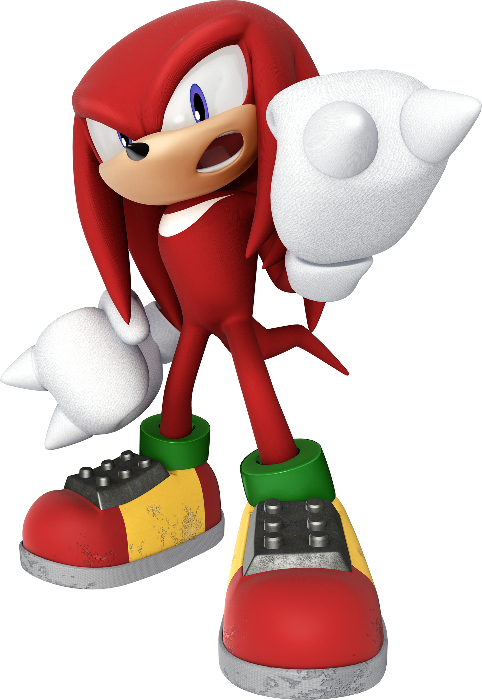

SONIC RED

SONIC RED ELE É UM OURIÇO, OU SEJA UM PORCO ESPINHO QUE TEM COMO HANILIDADE SUA"VELOCIDADE" E MUITA DESTREZA e MUITO FORTE!!!!! ELE É MUITO FORTE. MUITO RÁPIDO. SEU ARQUIRIVAL É O SONIC E SONIC WHITE.